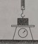
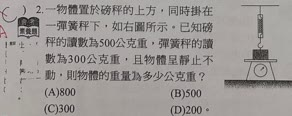

自然原卷第10張｜進階題第2題
完整原題

一物體置於磅秤的上方，同時懸在一彈簧秤下，如右圖。已知磅秤的讀數為500公克重，彈簧秤的讀數為300公克重，且物體呈靜止不動，則物體的重量為多少公克重？
(A) 800
(B) 500
(C) 300
(D) 200
先想一想，再查看答案、解說與原圖
原卷作答：C
正確答案：A，800公克重。
逐項解析
| 選項與原句 | 判讀 | 句意與判斷理由 |
|---|---|---|
| (A) 800 | 應選 | 兩個向上的支撐力相加。 |
| (B) 500 | 不選 | 漏掉彈簧秤提供的300gw拉力。 |
| (C) 300 | 不選 | 漏掉磅秤提供的500gw支持力。 |
| (D) 200 | 不選 | 兩個向上的力應相加，不能相減。 |
詳細說明與解題步驟
一、只畫作用在物體上的力
物體受到向下的重量，以及兩個向上的力：磅秤的支持力500gw、彈簧秤的拉力300gw。
二、利用靜止時合力為零
向下重量＝向上支持力＋向上拉力＝500＋300＝800gw，選A。
三、不要看錯未知量
題目要找物體的總重量，兩種向上支撐都已給定，要相加。若總重量已知、只缺其中一種支撐，才用相減。原卷選C，只讀到彈簧的300gw，漏掉磅秤提供的支持力。
核對註記：已核對完整題幹、全部選項與作答所需圖表；原卷標示自然（四），冊次列第四冊；使用者教材的對應章節未確認，章節歸綜合。
原圖（僅本題）
